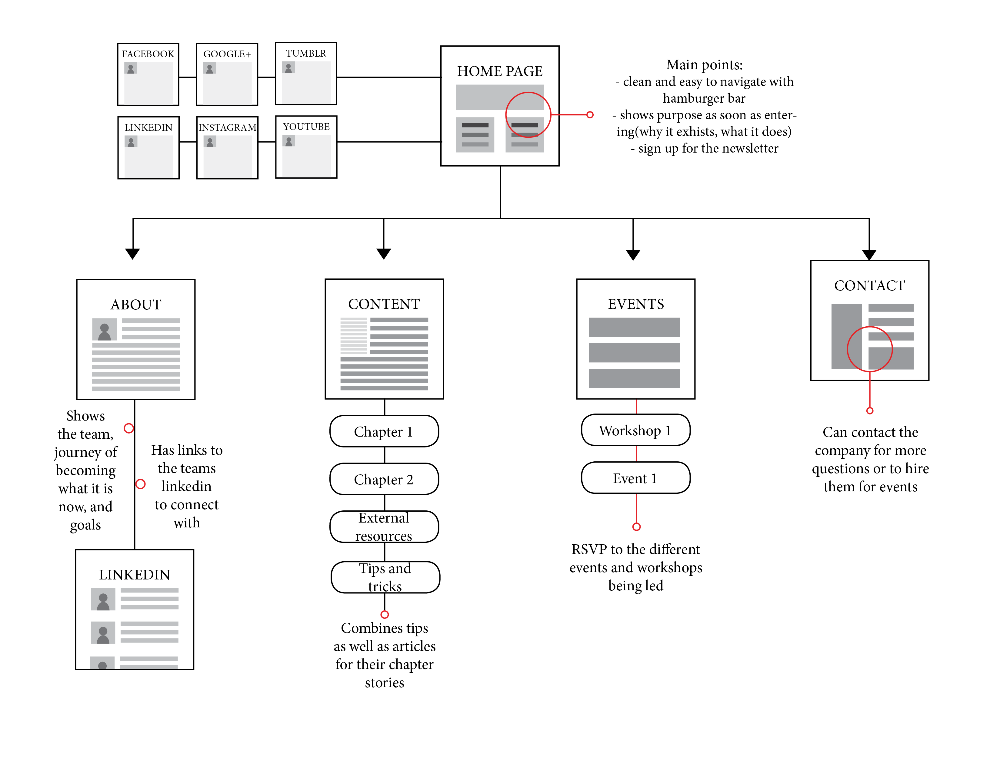
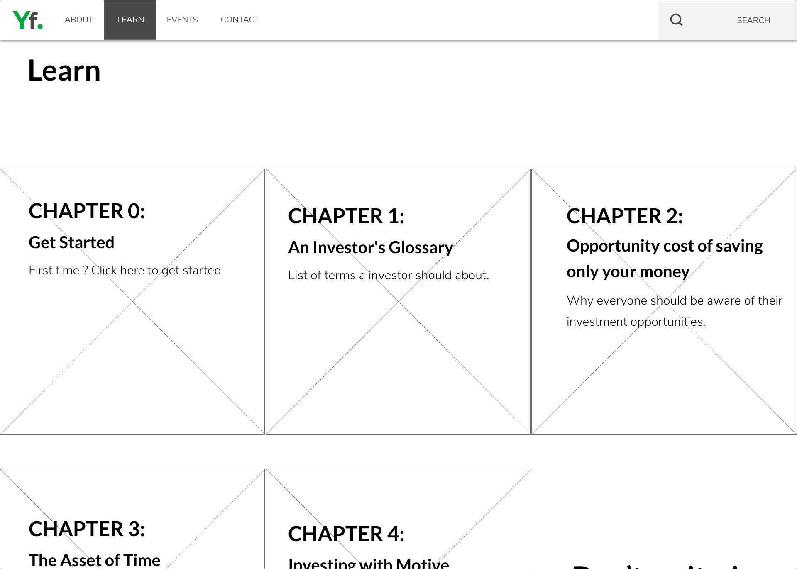
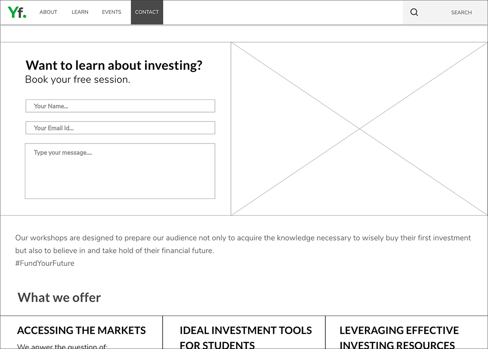
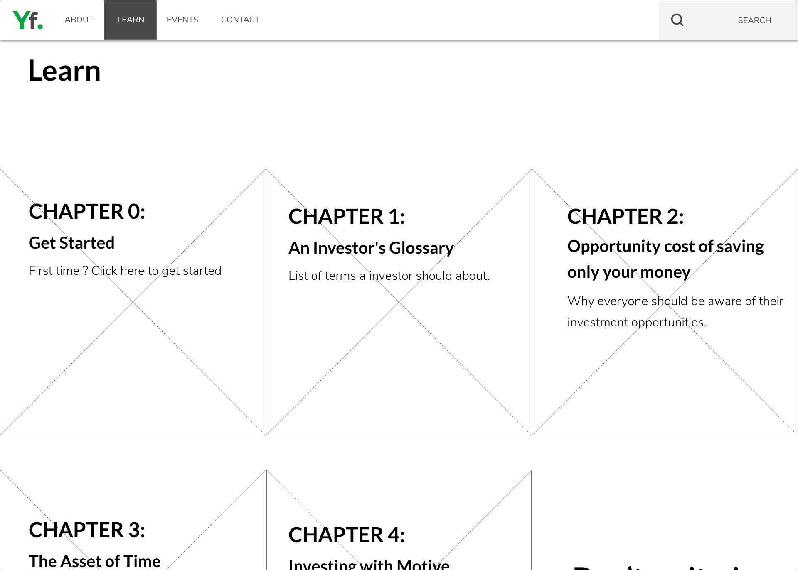
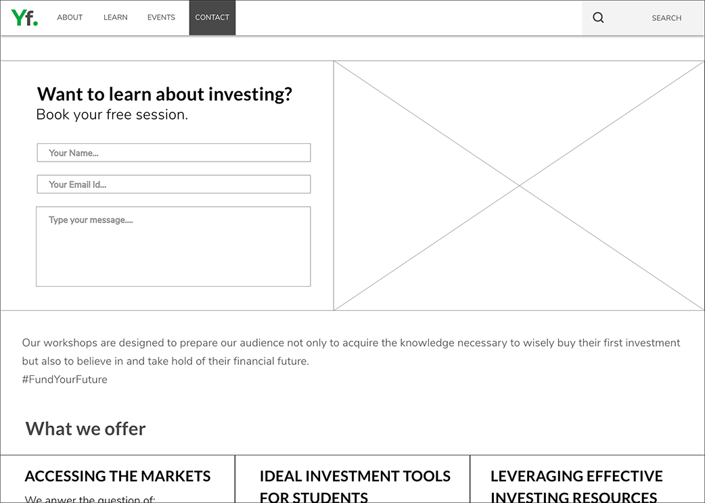
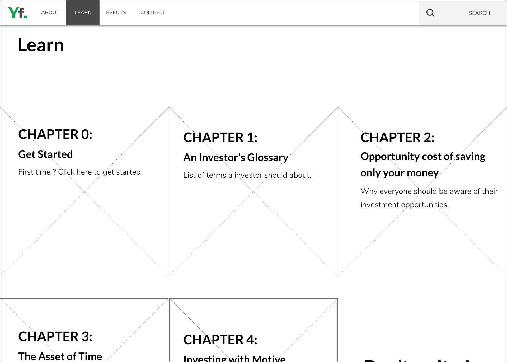
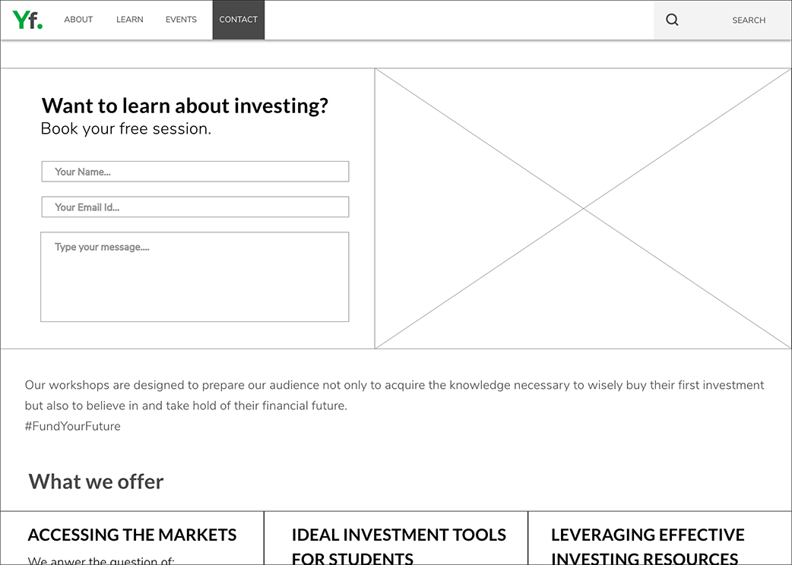

YFP is an initiative that has the goal of
educating young people to invest early.
Year
2019
Role
Product designer developer
deliverables
user research Ux/Ui design hi-fidelity mockup
tools
Photoshop adobe xd html5 / css
Over the span of three months, our team of four critiqued and redesigned the Young Funds Program (YFP)
website as the final deliverable for a course. Our objective was to help YFP create a modern and user
friendly website that would help them achieve their goals of educating young adults on financial literacy.
Understand
Approximately 76% of students wish they had gotten help preparing and learning about
their personal finances in high school. YFP tries to solve this by organizing
workshops, teaching investing terms, and offering one on one classes
to prepare students for the investing world. The company itself has many resources
that are useful for all levels of students wanting to learn more about finances
but the website itself is messy and hard to find information.
Define and Update
To properly solve the pain points for students, we conducted interviews of people with different investing abilities
and then assessed what they would want from a site like YFP. Using the data we collected, we were able to give personas
to what general students would want from an investing site. This updated information allowed us to ensure the site was
targeting all the right points to be able to teach students to their full abilities.Through talking with the target audience of YFP,
we noticed a few trends that hit all of them. One was the common fear of losing money due to bad calls or lack
of knowledge. Another was that all of them were looking for affirmation on their investing choices.
The Initiated
Overview: Took a 101 financial course, knows the difference between stocks and bonds. Has always loved the idea of investing but never took action.
Needs: A small push to get his foot in the door. More confidence in his investing abilities.
Wants: A mentor for insight and help guide his research. Resources on how to get started and how to be successful.
Success Criteria: Seeks for resouces and attends workshops. Confident enough in self to open his first account.
Fears: Losing money through investing or being scammed.
The Curious
Overview: Recently got in the stock market. Follows IPO new and can calculate P/E ratios.
Needs: More knowledge and experience to confidently contribute more to his account.
Wants: To ensure he’s making the right call. To share and validate his opinions with someone trustworthy.
Success Criteria: Successfully add companies to his portfolio. Being confident in his evaluations.
Fears: Losing money by investing in the wrong company and market fluctuations.
The Advanced
Overview: Has been making contributions to a Questrade TFSA account since she was 18. Reads SeekingAlpha every morning and vigorously follows MarketWatch.
Needs: To expand her portfolio and stay updated with current markets and make the right calls.
Wants: More knowledge to build her fortunes and to see what other investors are interested in.
Success Criteria: Accurate, relevant, and interesting content on YFP’s site. Profits after all cash outflows (ie. Transaction fees).
Fears: Making the wrong call. Buying/selling too early.
Audit
Our course prompt was to take a poorly designed local website to create something more
appealing and user-friendly for their target audience to use. We chose the
Young Funds Program website as it has lots
of great content but was not reaching its audience due to a few
glaring problems: unorganized content, outdated feel, and navigation problems.
One of my personal gripes with the website was the autoplaying video so that was
on my list for the first one to go.
During the interviews, we also got the interviewees to also run through the site and point out the headaches.
The original website had three main problems: unorganized content, outdated feel, and navigation problems.
The unorganized content led to low retention rate as students were not able to follow the information given
and finding additional information was difficult due to the navigation. Students did not want to explore the
pages and missed out on crucial information that would guide them in their investing journey.
Information Architecture
Our first phase was to create a sitemap in order to solve the unorganized
content and navigation problems of the original site. Using this we would identify the flow of the user
and highlight important sections. The trends that we found with the interviewees led us to change how the home
page content was organized as we believed more knowledge could solve a lot of the fears these students had. In
addition, I wanted to make sure there was a hierarchy to the information so building a mental map of where the
information was would be easier.

Homepage main points: clean and easy to navigate with hamburger bar, shows purpose as soon as entering(why it exhists, what it does), sign up for the newsletter.
About section: shows the team, journey of becoming what it is now, and goals. Has links to the teams linkedin to connect with.
Content section: combines tips as well as articles for their chapter stories.
Events section: RSVP to the different events and workshops being led.
Contact section: Can contact the company for more questions or to hire them for events.
Low-fidelity Wireframing
With the flow of the website fixed, we had to tackle the unorganized content on each page. My low-fidelity
wireframes showcased how we could better lay out each page in order to improve the user experience. By using
the information we got from our user interviews and our new site map, I would be able to give each page a
better hierarchy. Here I also began to address the outdated feel of the website and tried to lay things out
in a more modern manner.


From here we came together and chose parts we liked from each wireframe. These, along with modern
fonts and consistent colours, were combined together to make our medium-fidelity wireframes. We made
sure that we were still addressing the problems from our original website audit and creating an overall
user interface that would be more appealing and modern. We also looked into what YFP’s goals were for
their website in order to showcase their services front and centre.
Testing
Before moving onto our high-fidelity wireframes. We created a few iterations of our medium-fidelity wireframes
and put them through A/B testing. Doing this, we would ensure that we were creating a more aesthetic and user
friendly site for YFP’s audience. These wireframes were put through four rounds of testing before we finalized
them as a base for our high-fidelity. My teammates created our high-fidelity wireframes while myself and another
teammate were in charge of coding out the final project.
YFP's original homepage
Our redesigned homepage
Prototype
Before diving into the HTML/CSS, we changed a few more things for the final product. The neon green was replaced
with a more subdued colour in order to not distract from the contact, the navigation bar was simplified by removing
duplicate social media icons and we increased the padding to separate sections and enhance readability as well as
hierarchy. My teammate and I split up the pages and we used bootstrap in order to speed up the building progress as
well as making sure it would be usable on different screen sizes.
One of the biggest problems that we would run into if this project were to continue would be the aspect of
mobile design. As we did use some bootstrap, the website was able to adjust to the different screen sizes
but on mobile it would be a different story. For future sites, mobile first design would be the way to go
to ensure it would be readable and functional.
 The Initiated
The Initiated
 The Curious
The Curious
 The Advanced
The Advanced
 



 YFP's original homepage
YFP's original homepage
 Our redesigned homepage
Our redesigned homepage